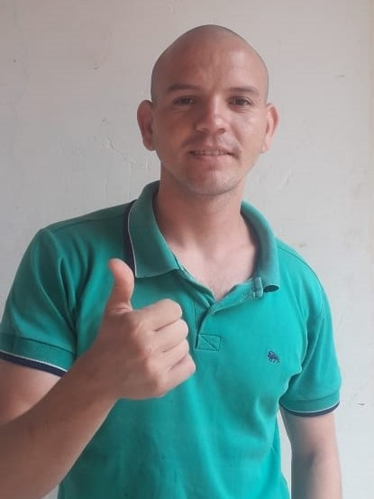

- Endereço: Folha 28 QD 37 LT 09
- Marabá-pa, CEP: ???????
- Telefone: (91) 988650649
- E-mail: werlenx@gmail.com, Github: ###
Werlen Araujo dos Santos
Objetivo
Procuro vaga na area de design grafico e programador web
HABILIDADES E COMPETÊNCIA
aprendo rapido novas tarefas, tenho facilidade de trabalhar em equipe
EXPERIÊNCIA
EDUCAÇÃO
- Ensino Superior
- curso: Bacharel em sistemas de informação
- Entidade: UNIFESSPA (Universidade do Sul e Sudeste do Pará)
- Ano de Formação: 2022